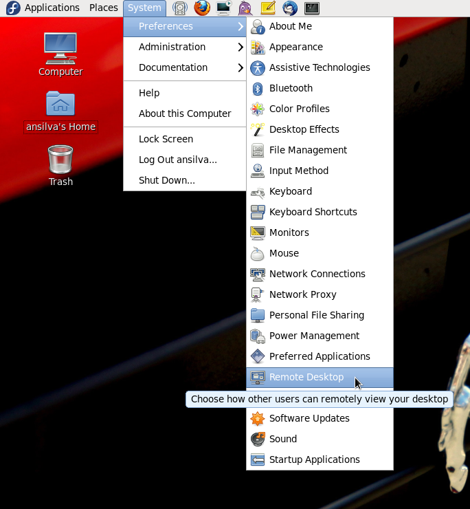
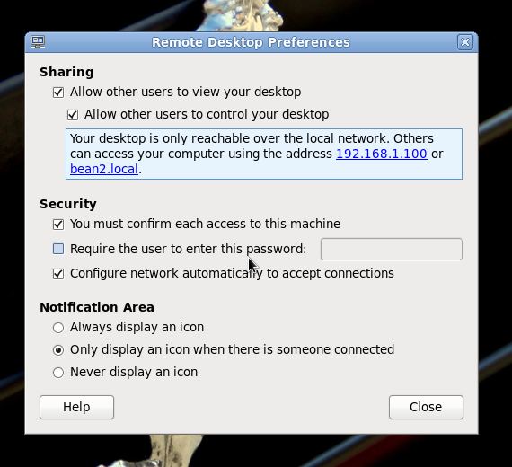
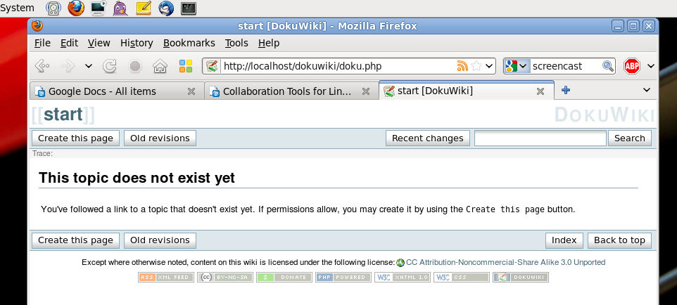
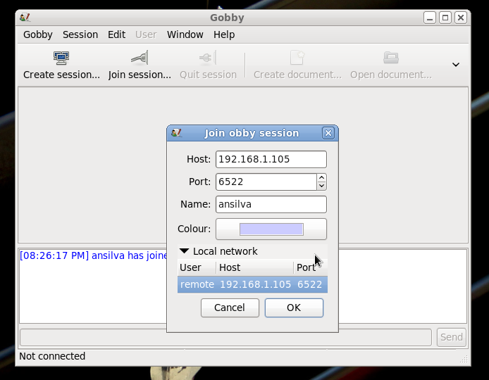
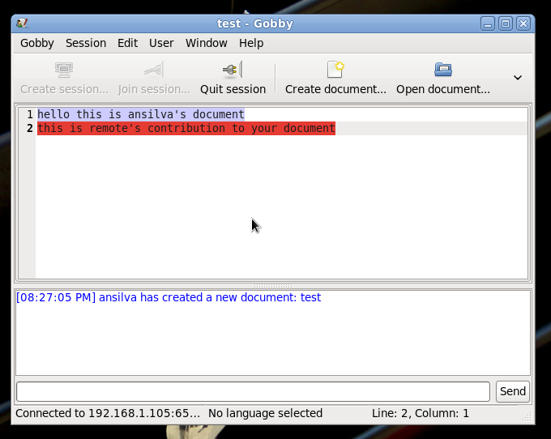

Collaboration Tools for Linux
Collaboration. It's a buzzword, like 'innovative' and 'cloud computing', and like most words, it can be used or misused. It reminds me of the words openness and community. It reminds me of open source. Rivals and allies such as Microsoft, Google, Red Hat, Oracle, HP, and so many others working on code in the Linux kernel is arguably one of the greatest examples of collaboration in the technology world.
Another great example of collaboration across the globe is Wikipedia, and I thought it would be appropriate to use its definition of 'Collaboration' as part of the introduction to my article. Per Wikipedia [1]:
Collaboration is a recursive process where two or more people or organizations work together in an intersection of common goals - for example, an intellectual endeavor that is creative in nature - by sharing knowledge, learning and building consensus.
It is with that definition in mind that I decided to share with you five specific tools for Linux that I either currently use or have used in the past to improve collaboration among individuals and departmental teams. I will point out that, for each of the tools I will mention, there most likely exist several other alternatives that may or may not do as good as a job as the ones I have decided to write about - after all, that is the beauty of the open source world.
Desktop sharing with Vino VNC server
Vncserver has been around for years as desktop sharing in multiple Operating Systems. Starting with Gnome 2.8, the Vino VNC server started being shipped by default. Vino allows a user to share the desktop with other remote users while granting them fine-grained access.

If enabled, the vino server only starts up once the user logs into their Gnome session. When the remote user tries to connect to the local desktop a pop-up window will show up on the local desktop and the remote user will only be able to access the desktop if the local user accepts the connection request.
To start up the connection with the desktop, all the remote user needs is a VNC client like vinagre. Some other possible clients are tigervnc for Fedora, tightvnc, or realvnc for Ubuntu.

A few things to be mindful of when enabling remote desktop under Gnome:
- Make sure you have the appropriate iptables rule to allow the remote connection.
- Like other 'standard' VNC servers, the communication between the client and vino is cleartext, so be aware of your security requirements.
- Don't forget to log out or lock your workstation if you must leave your computer unattended while remote users are connected to it.
Simple wiki installation with Doku
It is almost impossible nowadays to talk about collaboration in a technical environment without talking about a Wiki. I will even assume that virtually every person with some sort of networked device has either gained or contributed some wiki-based knowledge, even if they were not aware they were using a wiki.
With that said, installing a wiki on a Linux server has become simpler and simpler over the years. For this article, I picked PHP based wiki DokuWiki, which can be easily installed by running:
On Fedora:
yum install dokuwiki
On Ubuntu:
apt-get install dokuwiki
You will then have to make sure Apache is running, and should be able to access your newly installed wiki at: http://yourhost.com/dokuwiki/
Some other wikis available 'out of the box' for your installation on both Fedora and Ubuntu are mediawiki, trac, kwiki (perl-kwiki in Fedora), and moin (python-moin in Ubuntu).
Team programming with Gobby
A couple of years ago, I was invited to a meeting at work to discuss a project a couple of the developers were working on. What I thought was going to happen was that someone would hook up a projector to their laptop, and all eight of us would stare at the wall and every once in a while give a suggestion about some excessive 'if' statement or a poorly-designed method. Well, I was wrong. The lead developer popped Gobby on the screen, created a session, and asked the rest of us to install it and join the session.
From there, we started writing pseudo and real code, creating a 'to do' list, and updating documentation in the source code. Gobby is that cool!
Once you create a session, all other gobby instances in the network will automatically detect the created session. If you want a private session, add a password to your session. Each user is requested to pick a name and a color and as they modify the document, their picked color highlights the text they contribute.
To install gobby on Fedora:
yum install gobby
On Ubuntu:
apt-get install gobby
Creating screencasts with Istanbul
Have you ever tried walking someone through steps on how to accomplish a task on the desktop? And then they forget what they did, and ask you again six months later, and you have to walk through it all over again?
I have had this problem before, and it didn't take long until I decided to start using a screencast application on GNOME to record any tutorials I might end up working on.
I started using istanbul, a little python application that will place a 'record' button on your GNOME panel, and allow you to record what's going on your screen. It also let's you change the resolution of the screen and capture sound as you go through your motions.
Take a look at this small sample of istanbul at work.
Version Control with Git
Along with a compiler or interpreter, a version control system is arguably one of the most important tools a developer will use from day to day. As you probably already know, it allows one or more developers to store, retrieve, log, identify, and merge revisions of a file through time.
A few version control systems available under Linux are cvs, subversion, mercurial, bzr (bazaar), and git.
At work, as an organization, we've migrated from subversion and cvs to git, and that's mostly the reason why I decided to mention it in this article. If you have never tried git, I highly suggest you check it out. Git was originally written by Linus Torvalds for the Linux kernel development, and over the past few years has become more and more popular around the open source community. Just take a look at this list of current projects that are using Git as their version control system.
I also recommend you take a look at the wikipedia page about git and its official home to find out a bit more of its history, design and implementation.
Installing git on Fedora:
yum install git
on Ubuntu:
apt-get install git
Creating a repo is as simple as [2]:
$ cd (project-directory) $ git init $ (add some files) $ git add . $ git commit -m 'Initial commit'
And checking out some files from a repo and creating a patch [2]:
$ git clone git://github.com/git/hello-world.git $ cd hello-world $ (edit files) $ git add (files) $ git commit -m 'Explain what I changed' $ git format-patch origin/master
Once you start creating branches, and squash merges with git, you may find keeping track of diffs, logs and different branches a bit overwhelming at times. A great little tool a friend of mine introduced me to is called: tig, which is "a repository browser for the git revision control system that additionally can act as a pager for output from various git commands." [3]
Conclusion
Because some of the tools discussed above are client-server based, you should always check your firewall rules. Also, these tools are just the tip of the iceberg; technologies like microblogging, social networking, email, chatting, and so many others could easily be adapted into our day-to-day collaboration requirements. As you work through them with your organization, always take into consideration your infrastructure and security requirements before implementing any of these tools or services.
Unless you have a commitment from your organization or your team mates to work together in sharing knowledge and keeping this knowledge up-to-date, all of these collaboration tools at the end of the day sum up to just that: tools.
| Share |

|
Talkback: Discuss this article with The Answer Gang
![[BIO]](../gx/authors/silva.jpg)
Anderson Silva works as an IT Release Engineer at Red Hat, Inc. He holds a BS in Computer Science from Liberty University, a MS in Information Systems from the University of Maine. He is a Red Hat Certified Architect and has authored several Linux based articles for publications like: Linux Gazette, Revista do Linux, and Red Hat Magazine. Anderson has been married to his High School sweetheart, Joanna (who helps him edit his articles before submission), for 11 years, and has 3 kids. When he is not working or writing, he enjoys photography, spending time with his family, road cycling, watching Formula 1 and Indycar races, and taking his boys karting,